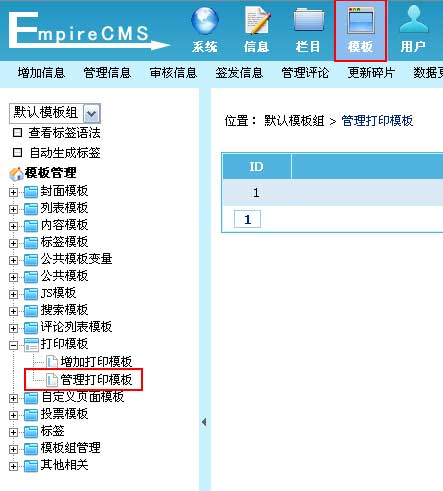
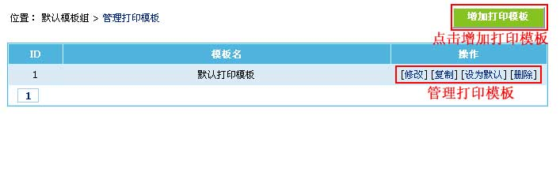
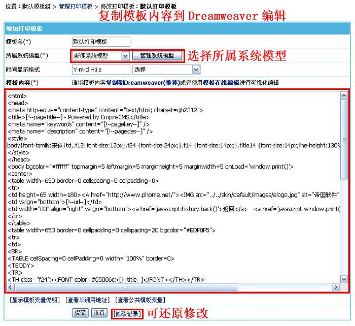

| 打印模板是指信息打印页面的模板，不同系统模型可以设置不同的打印模板(/e/DoPrint/)。 |
|
||
| 一、打印页面的调用 |
| 内容模板加打印页面链接：[!--news.url--]e/DoPrint/?classid=[!--classid--]&id=[!--id--] |
| 指定使用打印模板的链接：[!--news.url--]e/DoPrint/?classid=[!--classid--]&id=[!--id--]&tempid=打印模板ID |
| 二、管理打印模板 |
| 1、登录后台，单击“模板”菜单，选择“管理打印模板”子菜单，进入管理打印模板界面： | ||||||||||||||||||||||||
| 图片1：菜单导航  |
||||||||||||||||||||||||
| 2、进入管理打印模板界面：(蓝色背景为默认模板) | ||||||||||||||||||||||||
|  | ||||||||||||||||||||||||
| 3、点击“修改”进入修改打印模板界面： | ||||||||||||||||||||||||
|  | ||||||||||||||||||||||||
打印模板支持的变量：
|
| 三、其他说明 |
| 系统模型里可以指定当前模型使用哪个打印模板。 |